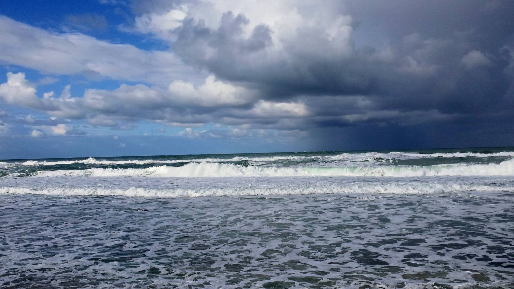
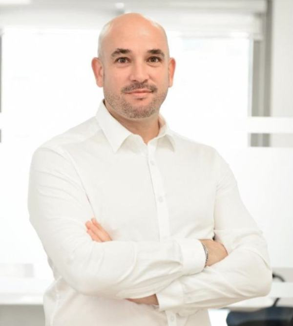

יואב איצקוביץYoav Itzkovitz
סוכן ביטוח ופנסיה · ההסתדרות 251, חיפהInsurance & pension agent · 251 HaHistadrut Blvd, Haifa
4.9 בגוגל · 43 ביקורות4.9 on Google · 43 reviews
ביטוח ופנסיה? נשמע סוער.Insurance and pensions? Sounds stormy.
מילים גדולות ואותיות קטנות.Big words and small print.
מעכשיו, זה ביחד.From now on, we do it together.
יושבים יחד ועוברים על הכול, בשפה פשוטה.We sit down and go through it all, in plain words.
תמונה להמחשה · מפרץ חיפה מהכרמלIllustrative photo · Haifa Bay from the Carmel

מה ששווה לשמור עליו.What’s worth looking after.
ביטוח, פנסיה וחיסכון לטווח ארוך.Insurance, pension and long-term savings.
לשאול את יואבAsk Yoavסוכן עם שם ופנים.An agent with a name and a face.

ביטוח ופנסיהInsurance & pension
פוליסות, כיסויים וחיסכון לטווח ארוך.Policies, cover and long-term savings.
איצקו סוכנות לביטוחItzko Insurance Agency
הסוכנות של יואב, ברחוב ההסתדרות 251 בחיפה.Yoav’s agency, at 251 HaHistadrut Blvd, Haifa.

התחזית: בהיר.The forecast: clear.
יואב שירותי מאוד, זמני טיפול קצרים והוא מעדכן על כל התקדמות על כל חלק מהתהליך ב'און ליין'. נותן הרבה שקט בתחום ה'מפחיד' הזה שנקרא ביטוח ופנסיהYoav gives great service with short handling times, and he updates you “online” on every part of the process. He brings a lot of calm to this “scary” field called insurance and pensions.
יואב היקר, תודה רבה לך על השירות המקצועי והאכפתי שלך. הגישה האנושית והסבלנית שלך הפכה את כל התהליך לפשוט ונעים. אנחנו מרגישים שאנחנו בידיים טובות ובטוחים איתך כסוכן הביטוח שלנו.Dear Yoav, thank you so much for your professional, caring service. Your human, patient approach made the whole process simple and pleasant. We feel we’re in good hands and safe with you as our insurance agent.
ממליץ בחום על יואב! מקצועי, סבלני, זמין תמיד לשאלות ומסביר הכול בצורה ברורה ופשוטה. … נותן תחושת ביטחון אמיתית – בן אדם שאפשר לסמוך עליו בעיניים עצומות.Warmly recommend Yoav! Professional, patient, always available for questions, and he explains everything clearly and simply. … He gives a real sense of security – someone you can trust with your eyes closed.
נתחיל בשיחה.Let’s start with a talk.
נפתח וואטסאפ עם הודעה מוכנה. אפשר לערוך לפני השליחה.WhatsApp opens with the message ready. You can edit it before sending.
או בטלפון: Or call 052-465-3933
| ראשון–חמישי | 9:00–20:00 |
| שישי | 9:00–12:00 |
| שבת | סגור |
ההסתדרות 251, חיפה251 HaHistadrut Blvd, Haifa
ניווט למשרדDirections